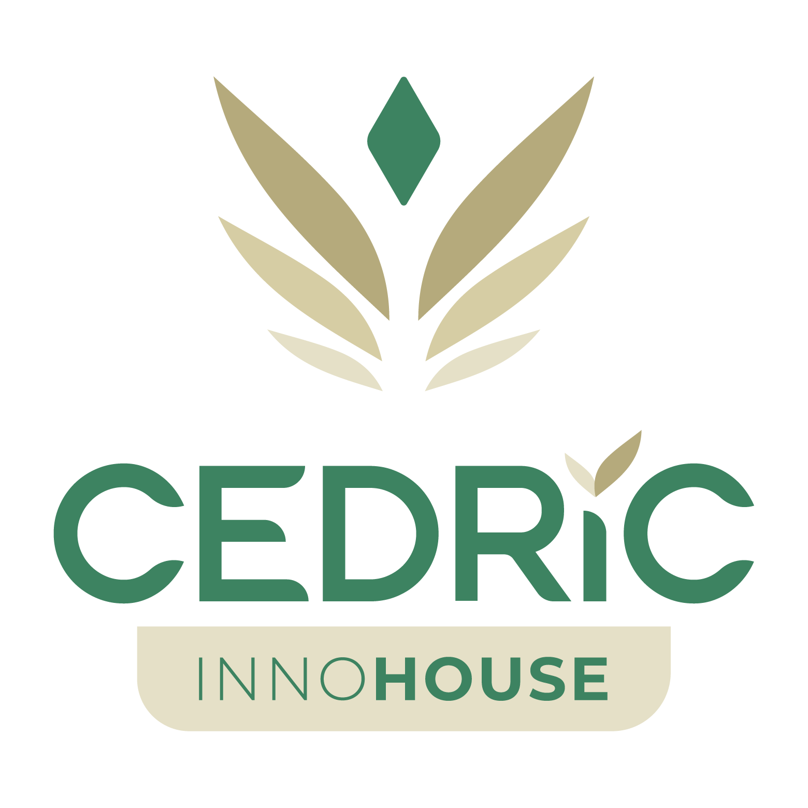

سند تاییدیه صلاحیت حرفهای و حمایت حقوقی
(اعتبارنامه قابل تایید برای پلتفرمهای خدماتی)
توسعهدهنده مجاز: امیرحسین سلمانی
سطح اعتبارنامه: نوپا (Genesis) - متخصص توسعه بکاند و فرانتاند و معماری وب
۱. حمایت زیرساختی و نظارت سیستمی
بدینوسیله تایید میگردد که توسعهدهنده نامبرده، عضو رسمی خانه نوآوری سدریک بوده و تمامی پروژههای ایشان تحت نظارت عالی، مربیگری استراتژیک و حمایت کامل زیرساختی (شامل تامین سرورهای پایدار و مشاورههای حقوقی) این اکوسیستم انجام میپذیرد. هدف ما تزریق یک اتمسفر مبتنی بر اعتماد، شفافیت و اجرای تابآور در قراردادهای فیمابین کارفرمایان و مجریان است.
۲. رویه عملیاتی استاندارد و مدیریت انتظارات
به منظور تضمین کیفیت، جلوگیری از تاخیر در تحویل و حفظ پایداری سیستم، تمامی پروژههای تحت قرارداد این توسعهدهنده از پروتکل مدیریت محدوده زیر تبعیت میکنند:
- خط مبنای قرارداد: توافقات اولیه مکتوب (شامل تعداد صفحات، نوع کاربری و ویژگیهای فنی مطرح شده در زمان عقد قرارداد)، معیار نهایی و قطعی برای تحویل پروژه است.
- تلورانس تغییرات رایگان: به منظور جلب رضایت کارفرما، تا سقف ۱۵٪ تغییرات صرفاً در لایه رابط کاربری (مانند اصلاحات جزئی رنگبندی، تغییر فونت یا جابجایی عناصر بصری ساده) در طول اجرای فاز اول، بدون هزینه اضافی اعمال میگردد.
- ثبت درخواست توسعه جدید: هرگونه نیاز جدید که در خط مبنای اولیه ذکر نشده باشد (نظیر تغییر در منطق برنامهنویسی، اتصال به سامانهها و رابطهای خارجی، و تغییرات ساختاری)، به عنوان یک درخواست تغییر رسمی تلقی شده و مستلزم تخصیص بودجه و زمانبندی مجزا در قالب یک فاز توسعهای جدید خواهد بود.